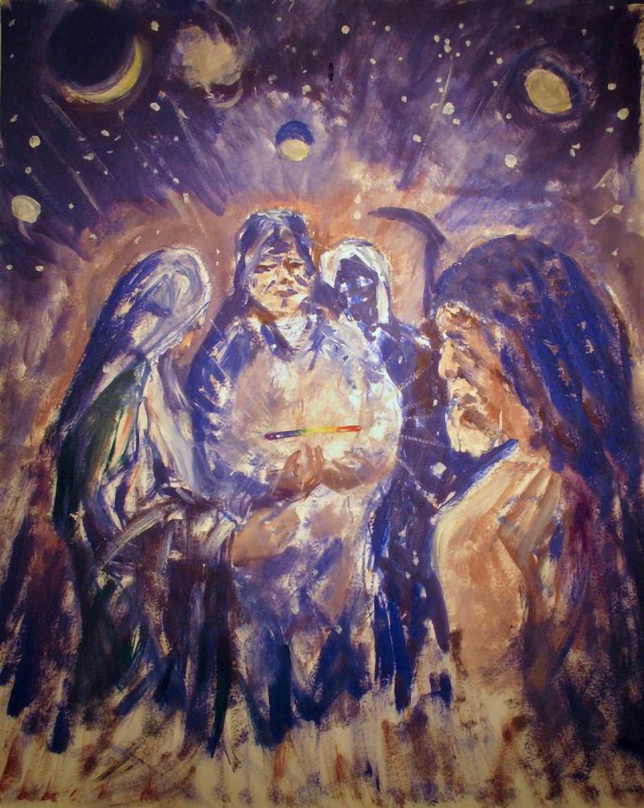

Dreams provide us with an endless array of creative possibilities and promptings. Because they are unfettered with the limitations we put on ourselves, dreams can show us snapshots of our potentials, even if our outer abilities are not yet fully developed. By looking at dreams from the perspective of their creative possibilities we can easily discover the assumptions which may block our creative expression as well as the ways in which our creative spirit is most naturally brought forth. When we respond to the bidding of our dreams, an inner dialogue is established and through it new levels of psychic harmony can be achieved.

Creativity is basically a process of discovering novel solutions for problems or answers to questions. These problems may be self-generated and not necessarily negative. An architect, for instance, envisions the design of a building, but this is only the first step, the inspiration. Creativity also comes into play during the process of manifesting the original idea into a physical structure. Parents have to be infinitely creative in raising children. They may have chosen to raise a family, but with it often comes a parade of situations and difficulties which must be faced and de with. So creativity is not something confined to a narrow range of artistic expression. Rather, creativity is continuously being used in all phases of life and is the very spark of human culture.
Without problems to overcome we would be a pretty dull lot, repeating the same actions day after day. Large parts of our lives are already routinized, demanding little initiative or imagination on our parts. Few would be content if this were the status quo all the time. Perhaps for this reason the lives of many artists are so full of personal struggle and emotional difficulty. Without the struggle there would be neither the stimulus nor the depth to their creative expression. The history of society's development is one of overcoming problems and attempting to make life better. Problems demand solutions and solutions often come through releasing assumptions about how we think things should or shouldn't be. It is the fresh approach, kindled by inspiration to find solutions which constitutes creativity.
Our dreams are reflections of our waking life without the active interference of external reality. In this private, internalized world, we directly experience our true attitudes and motivations; our felt strengths and weaknesses; and our response to whatever we perceive reality to be. Through the looking glass of dreams we can easily discover what we already "know" but may be hesitant to admit. By the same token, our dreams often present us with creative solutions or artistic expressions. Many of the world's greatest thinkers and artists were inspired through dreams, and countless dilemmas are slept upon and solved nightly the world over. How many solutions arrived via dreams we will never know.

It is essential in the process of creativity to give expression to what is perceived inspirationally. Otherwise you remain just a "dreamer," and not in a flattering sense of the word. Perhaps you can solve all the world's problems or may be the greatest artist who ever lived. If you do nothing with it, you will be the only one who ever knows and no one else will benefit from it or believe it. If your inner vision goes unexpressed it is like a still-born child. The process of creativity completed is a process of bringing forth into physical form or expression what is perceived inwardly. Once this happens the expression exits the internalized world of the dreamer and plays itself out in the waking world. Here it takes on new aspects and possibilities as it is merged with the broad spectrum of collective interrelationships.
Dreams are a resource, an endless reservoir of malleable possibilities. It isn't necessary to express every dream, just as you wouldn't pick every flower in a garden. dreams and creativity Rather, you cultivate creativity within dreams as you would a garden, by seeding them with questions for which you need a creative solution. After you've actively worked at the solution you allow the more knowing parts of your consciousness to play with the possibilities. Before sleeping, focus on the problem and formulate the question or desired result. Then let it go and allow your dreams to grapple with the situation creatively. This naturally occurs when we are focused on or are preoccupied with a project or problem. If a problem is being worked out the answer often comes as a feeling rather than a particular plot or image.
Recently my wife and I made an offer on a condominium. It was in a good location, the price was right for us, and the real estate agent assured us it was absolutely the right thing to buy. I asked my dreams to help me sort out if it was the right choice. I dreamed that I was in a large building complex which was also like a space ship. Outside the sky was white and I couldn't see the ground. Everyone was happy that we were going up but I had the distinct feeling that we were going down. I felt as if we were in fact falling. No, the others told me, we were going up, and they pointed out things like an occasional bird which would shoot past. On one of the following days I did some research and found out that the condominium complex had many problems which had not been disclosed to us. There was actually a law suit surrounding the place and one of the complaints by the homeowners was that on account of the many problems their property value was not appreciating and they were actually losing money. I had drawn the image of the space ship in my journal and as I looked back over it I realized that it could represent the condominium complex. The real estate agents assured us the property was "going up" in value, but my intuition was telling me it was in fact a very risky investment. We consequently backed out of the deal. I didn't come to this conclusion directly but through working with and creatively expressing the dream.
There are many levels to creative expression through dreams. Simply sharing a dream with others is a creative act. It releases the dream and speaks to others a metaphoric language which is at once intimate and honest. All artistic work begins with a sketch. Depending upon your level of motivation you can sketch an idea or take the sketch through successive stages toward more refined work. Many of my most effective works of art have been simple sketches in my journals. Perhaps years later I decide to carry them further into a larger painting. The painting might be more refined, but I always feel that the original sketch is closer to the source. It is in the act of graphically representing the symbols of dreams that the creative inspiration is channeled. For this reason it really doesn't require any particular artistic skill to get the benefit of expressing a dream in this way.
At any point creativity allows you to manipulate and alter the original idea. Artistic license , like dreams, promotes creativity by permitting any possible scenario to take place. If we wish to pursue the arts for pleasure, dreams are a constant source of new and honest material. The dreams needn't be represented literally but rather can be the inspiration and the raw material for creative pursuits.
Life itself is spontaneous and continually adaptable, and if your way of viewing things becomes set in cement, then these qualities of life go begging. Because conditions around us are constantly changing and challenging our assumptions, it is more important than ever to have available creative resources to turn to. Dreams provide us with such a resource. Whether we are artistically inclined or not we all have the ability to creatively respond to the challenges of everyday life.
The process of refining a dream painting
Creating artwork from dreams can go through any number of stages from a simple sketch in a dream journal to a completed painting. The two pictures shown here illustrate how a dream can be expressed spontaneously and at a later date used as the basis for a more finished work. The dream itself was of two hooded figures in a dark landscape, one of whom is cradling a delicate, tricolored light suspended above his hands, while a small group looks on in wonder. Wanting to understand the dream, I painted it very quickly the next afternoon. In the spontaneity of this act other imagery took shape, such as a grim reaper and a robed wise man, reminding me of Lao Tsu. Moons, galaxies, and stars appeared as well, as if shooting out of the center of the picture. Several years later I decided to refine the concept into a bigger painting. As the painting took shape, Lao Tsu lost his beard and became a woman and the figure of death became more obscure. I wanted the focus to be on the light and the woman's figure gave a feminine balance to the painting. Thus the original dream was an impetus which continued to grow and transform as I reatively expressed it.